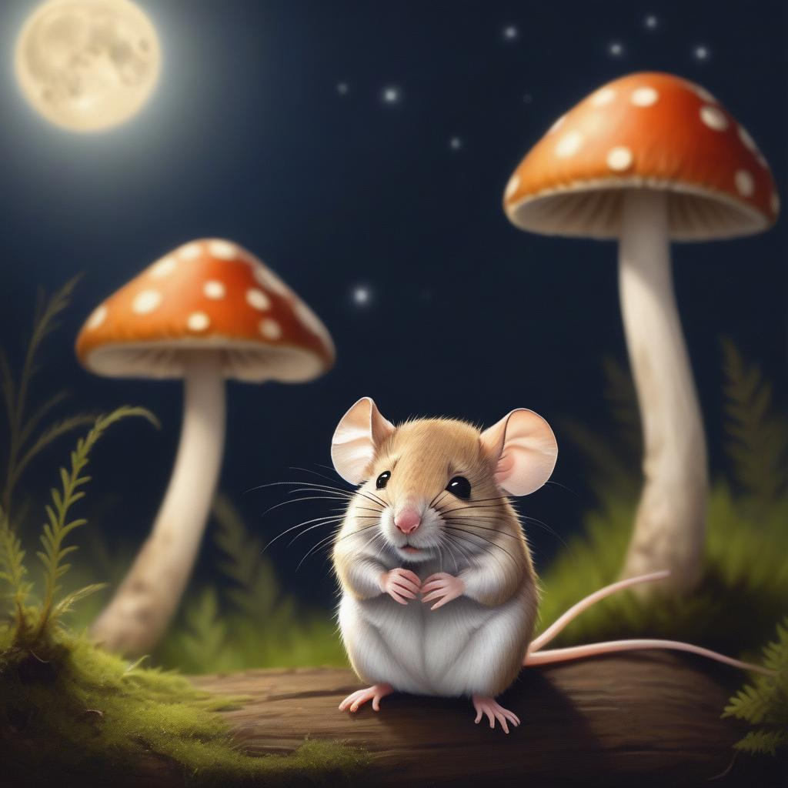

Charles did not sleep well. The air grew cold and still. The moon light did not warm him. The night was silent, except for the ocassional sounds other animals made from their nesting places: a baby bird in a nest high above was hungry, and one time a salamander padded by, tiny feet on moss making the faintest whispering sounds. Charles listened, and Charles thought about home. Was Mom missing him? Was she angry?